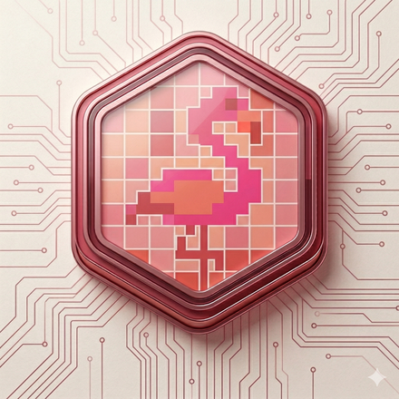

Did You Choose This?
Noah and Ellis explore a fundamental question: How much of your life did you actually choose? They discuss the difference between making choices and choosing the framework those choices live in — the menu vs restaurant problem. Ellis shares her journey from following a default path to consciously questioning and redesigning her life. A conversation about autonomy, defaults, and what it really means to choose.
Chapters
Transcript
How much of your life did you actually choose? I mean that seriously. Not as a philosophical exercise. As an actual question. Take a second with it. Because about a year ago, someone asked me that. And I didn't have a good answer. And I've been thinking about it ever since. The person that dropped that bomb on me.. is Ellis, and she's here with me today. Welcome to How To Live Your Autonomous Life. I'm Noah. # Chapter: Meet Ellis
And I'm Ellis.
Hi! I'm genuinely, genuinely glad you said YES! to this. Eventually... had to stalk you for a bit there.
Trying hard is a charm.
For sure, yeah... We've had a lot of conversations since that first one, and every time I walk away thinking — more people need to hear this.
Well, that's a good deal for me — I'd talk with you anyway. Now people can listen in and tag along for the ride.
Okay. So — that question. How much of your life did you ACTUALLY choose. That's been sitting with me for a year now. And I still don't know what to do with it. So — where does that come from for you? Why do you even ask people that?
Because I think most people never ask themselves.. it doesn't even occur to them that there's something to ask.
Yeah.. I think I'm one of those people.
You grow up, you follow the path that's in front of you, you pick and make the best from the options that are in front of you.. you make the best obvious next move. And that feels like choosing your life.
..is that not what I'm doing? # Chapter: The menu vs the restaurant
Yeah, that's the thing. You're making choices — REAL choices. But you're choosing from a menu in a restaurant. Should I pick A, B or C. But did you ever question the restaurant you're in? Did you ever consider other options... — other restaurants, or maybe you'd rather cook at home?
The menu versus the restaurant.
Right. You can spend your whole life making considered choices and still never have chosen the framework those choices live inside.
Okay but — and I mean this genuinely — is that actually a problem? Like, a lot of people are, you know, legitimately happy with what's on the menu. Who am I to say they should be questioning the restaurant?
You're not. And neither am I. That's not the point.
Then what is?
The point is knowing your options and THEN choose. Some people look to see what their options are and end up choosing the exact same thing. That's GREAT! They made a conscious choice.
Like... someone who actually looks at their job, looks at every alternative, and stays.
Yes. But now they're there because they chose to be. Not because they never looked up.
Same with where you live.
Same with where you live. Same with who you spend Christmas with. Same with the city you stayed in because that's where everyone you know lives.
So it's not about leaving anything.
No. Same restaurant, same menu, same dish — but now it's actually yours. That is CHOOSING your life instead of it just happening to you.
...fair. Okay. I think that landed differently than I expected. Because I was hearing — "everyone should leave the restaurant." But you're saying —
I'm saying look around, KNOW YOUR OPTIONS... Maybe you are living your best life, great, stay at this restaurant - but now it is YOUR choice.
Same restaurant — but now it's an ACTUAL decision.
Exactly.
But that's also — I mean, once you start to think about other options...
You can't undo. Which is the uncomfortable part. Because now you actually HAVE to decide. # Chapter: Looking at your actual options
So — what does it actually mean to look? Because I think this is where it gets practical for people. You can't just, like, wake up one morning and decide to question everything.
You start by questioning what you've assumed was fixed. Most of what people think is fixed — isn't. It's the only option they've ever been presented with — are comfortable with, see around them...
Do you have an example?
Well, as for me: after I finished my studies, I went straight into full-time work. Good job, work I liked. And the path forward was clear — keep working, build a career, be financially dependent on having a job until sixty-five or so, then retire when the government says you can. Completely reasonable path... It's what I saw around me, made sense at the time.
Until it didn't?
Not so much, not a bombshell moment like I am going to turn my life around. No, I was fine. Only thing was, being a bit curious on how stuff works, I started asking myself: is this the only way to live my life and is it the best way? Or are there other ways this could look?
And were there?
Absolutely! And some of them were more interesting to me than the one I was pursuing.. So I started making choices — small ones, consistently — every day, to become a little less dependent on NEEDING a job to be okay. # Chapter: Conscious choice vs the default path
And, and that's different from just — deciding to do things differently.
Completely different. Deciding to do things differently is still choosing from the same menu. Actually looking means not just picking from the menu in front of you but stepping back far enough to figure out: what restaurant am I in? What are my other options — and when you have the options on the table, make a conscious choice.
But isn't that, like — I don't know. Isn't that a luxury? Being able to step back and question everything? Some people are just trying to, you know get to the next day..
Looking doesn't cost anything, not in this information age! It's not a luxury — it's a direction. I didn't quit my job and move to a beach somewhere. I kept working. I just started asking a different question while I did it "getting to the next day". Small steps. Nothing dramatic.
Hm. That's — yeah. Really undramatic
Everybody takes small steps every day. The only thing I did differently — I took proper time first to step back and really see what my options were. Then I chose.
So the small steps weren't the point.
No. The question was.
"What are my actual options."
That's it. That's the whole thing.
And the specific small steps you took — financial or otherwise —
That information is everywhere. My specific answer doesn't matter. Yours will be different. The question is the same.
To live a life you actually chose.
That's the whole thing.
Yeah, so.. and you realized that cooking at home was also an option instead of choosing from a restaurant?
Exactly!
And you had no idea that was an option until you started questioning the path you were on..
Pretty much! I was twenty-something, doing everything correctly, on a perfectly reasonable path — and it genuinely hadn't occurred to me that the path itself was a choice — a choice I didn't consciously make myself!
That's the thing I keep coming back to. It's not that the default is bad. It's that most people don't know it's a default. They think it's just — reality.
And that's the difference between a life you're consciously choosing and a life that's happening to you.
Hm.
Why has that question been sitting with you for a year?
Honestly? Because I didn't have a good answer. And I'm, like — I'm used to having answers. Or at least feeling like I do. But when you asked me that I just... sat there. And I realized I'd been making a lot of choices — good choices, choices I'm proud of — without ever questioning what I was choosing inside of. And I don't know what to do with that yet.
And that bothered you.
It still does. Which is probably why we're here. # Chapter: Pick one thing. Look at it.
Well, don't overthink it. You don't have to question everything at once. That's not how this works. You just... pick one thing.
One thing.
One area of your life where you start wondering — did I actually choose this, or did it just happen? Your career. How you spend your money. Who you spend your time with.
What you believe.
Sure. Any of it. Just pick one. Look at it. That's it.
That's it?
That's the whole thing. You don't need a plan. You don't need to blow anything up. You just need to look at one thing honestly enough to ask: is this mine and how could it be different?
I'm going to think about that.
Good. Let's dive into whatever you put under the microscope next week.
I'm Noah.
I'm Ellis.
This was How To Live Your Autonomous Life. See you next week.
Stay in sync
New episodes drop weekly. Subscribe wherever you listen to podcasts.